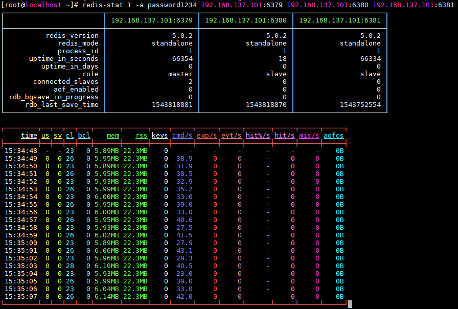
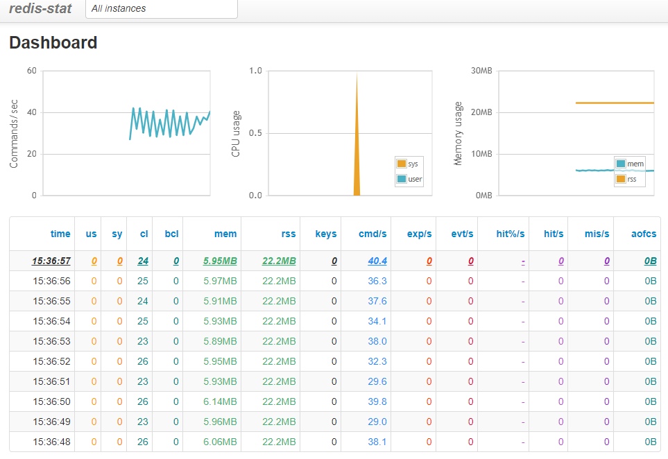
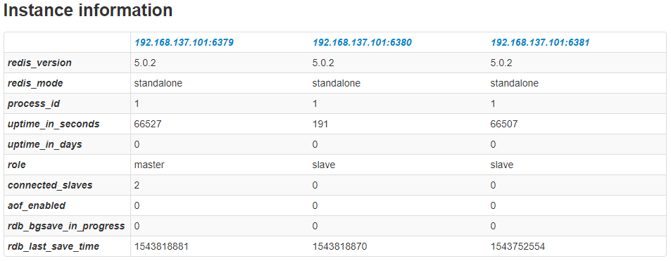

Redis-stats
Redis-stat은 대표적인 오픈소스 Redis 모니터링 도구입니다.
Ruby 기반으로 동작하는 프로그램이며, Ruby만 설치되어 있다면 설치가 간편하고 Web 또는 Console로 Redis 서버를 모니터링 할 수 있습니다. 비슷한 모니터링 도구로 Redmon, RedisLive등이 있지만.. Redis 4이상 버전을 아직 지원하지 않아서 Redis-stat으로 설치 해보게 되었습니다.
Redis-stats 설치하기
Install Dependency
1
2yum install -y gcc-c++ patch readline readline-devel zlib zlib-devel openssl-devel make
yum install -y bzip2 autoconf automake libtool bison iconv-devel sqlite-devel libyaml-devel libffi-devel
Install RVM (Ruby Version Manager)
1
2curl -sSL https://rvm.io/mpapis.asc | gpg --import
curl -L get.rvm.io | bash -s stable
Setup RVM Environment
1
2source /etc/profile.d/rvm.sh
rvm reload
Install Ruby 2.3.3
1
rvm install 2.3.3
Set Default Ruby Version
1
2rvm list
rvm use 2.3.3 --default
Setup Redis-stat
1
gem install redis-stat
Redis-stat 실행하기
Redis-stat은 Web에서 조회하는 방법과 Console에서 조회하는 방법이 있습니다. 두 가지 형태의 모니터링 방법과 속성에 대해 알아보겠습니다.
Redis-stat 옵션
| 명령어 | 설명 | 비고 |
|---|---|---|
| redis-stat 1 | localhost:6379 1초 간격으로 조회 | |
| redis-stat 1 10 | localhost:6379 1초 간격으로 10회 조회 | |
| redis-stat --verbose | localhost:6379 2초 간격으로 보여주기 | |
| redis-stat 192.168.0.2:6379 192.168.0.2:6380 5 | 192.168.0.2:6379 192.168.0.2:6380서버를 5초 간격으로 보여주기 | |
| redis-stat --csv=/temp/redis-log.csv | csv파일 남기기 | |
| redis-stat --daemon --server 8888 | daemon 모드로 실행 port 8888번으로 접속 시, Web Monitoring mode로 작동 | daemon과 server는 반드시 같이 사용해야하는 옵션 |
| redis-stat -a (--auth) password | -a 또는 --auth 옵션을 통해 requirepass 비밀번호 설정 |
Redis-stat (Console Monitoring)
1
2
3#192.168.137.101 서버의 6379~6381 포트 정보를 조회
redis-stat 1 -a password1234 \
192.168.137.101:6379 192.168.137.101:6380 192.168.137.101:6381

Redis-stat (Web Monitoring)
1
2
3
4
5
6
7
8
9
# CentOs 방화벽 포트 open
firewall-cmd --permanent --zone=public --add-port 8888/tcp
firewall-cmd --reload
#192.168.137.101 서버의 6379~6381 포트 정보를 조회
redis-stat 1 -a <requirepass> \
192.168.137.101:6379 192.168.137.101:6380 192.168.137.101:6381 \
--daemon --server=8888
192.168.137.104:8888 서버로 접속


아쉬운 점
- 그 당시의 모니터링만 가능하다. (별도 저장소가 없기 때문) -> 이전 로그를 보기 위해선 CSV 파일을 남기는 것이 최선
- 보고자 하는 정보가 적다. 기본적으로 메모리 사용량, Client 수 Key Size정도는 제공을 하지만 다른 툴에서는 더 많은 정보가 제공되는 것 같다.